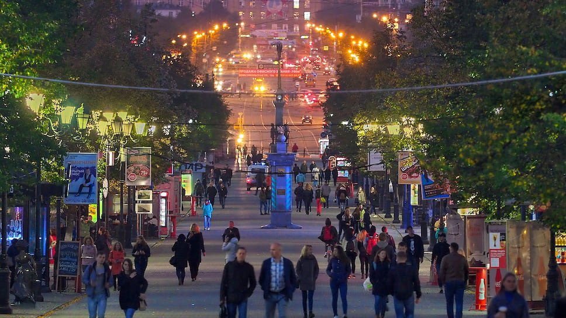

Небольшой дисклеймер!
Я написал о тех местах, где по моему субъективному мнению можно отлично провести время с друзьями во время прогулки. То есть блогадря им есть шанс составить полжительное впечатление о Челябинске. Если вы ознакомились, нажмите на красную кнопку.
Места, которые я бы порекомендовал посетить!
- Кировка
— это одна длинная пешеходная улица, где с каждой стороны есть кафе, магазины, фаст-фуд и многое другое. Кировка находится в центре города, поэтому там постоянно гуляют люди. Сама по себе Кировка очень красивая, оссобенно зимой. Так-же там довольно часто проводят выставки картин и различные мероприятия. 
- Белый рынок
Концепция «Белый рынок» подразумевает объединение на одном пространстве общественных заведений различных форматов: торговых, гастрономических, культурных. Центр пространства — фермерский рынок. Рядом с ним размещаются гастробары, рестораны и кафе, представляющие разные направления современной ресторанной индустрии. Это не только кухни разных народов мира, но и популярные бургерные, стейк-хаусы, рестораны здорового питания. Значительная часть площадей будет использована для проведения маркетов, фестивалей, дегустаций, презентаций, детских и взрослых мастер-классов. 
- Набережная Миасса
На отрезке от «Мегаполиса» до Свердловского проспекта облагородили 400 метров. Раньше на этом месте был пустырь, а теперь ухоженная набережная — с деревянными скамейками, пляжными зонтами и клумбами.Перед посетителями открывается обзор на реку Миасс: для этого предусмотрели забор из металлических перекладин. Ближе к мосту на Свердловском проспекте организовали детскую площадку. Рядом с набережной можно и поесть, так как прямо в «Мегаполисе» работает гастропарк. Там представлены узбекская, восточная, корейская и американская кухни.